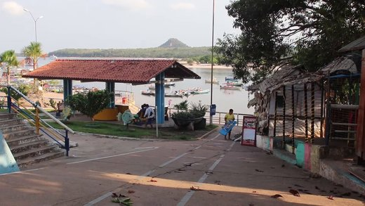

00:01:09.636
Passeio de acesso à orla com um abrigo de telhado de cerâmica, escadas, pequenas embarcações e um morro ao fundo.
Orla de Alter do Chão, Santarém (PA) · confirmado
A montagem com música mostra a chegada à beira d’água após a apresentação de Alter do Chão como ponto de partida para roteiros turísticos.
Transcrição · 00:00:33 | 00:00:56
Turismo Aqui — quadro de vídeo publicado no YouTube